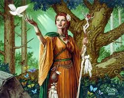

Mitos
Brigantia


Ficha rápida
- Quen era? Brigantia, unha deusa da mitoloxía celta.
- Representaba: A forza, a protección e a sabedoría.
- Curiosidade: O seu nome procede da palabra celta brig ("altura") e está ligado á antiga Brigantium, como se coñecía a actual Coruña.
O mito en si
O outro día pasei por diante dun local que se chamaba Brigantia e pensei: por que non escribo sobre este nome?
Brigantia era unha deusa da mitoloxía celta asociada á forza, á protección e á sabedoría. O seu nome procede da palabra celta brig, que significa "altura", e tamén está ligado á antiga Brigantium, como se coñecía a actual Coruña.
E pouco máis. Hoxe non estaba especialmente inspirada, pero apetecíame facerlle un pequeno oco a un nome que sempre me gustou.
Bibliografía
Brigantia: Significado y origen del nombre de pila | Buscar genealogía en Ancestry®.
https://www.ancestry.com/first-name-meaning/brigantia?geo-lang=es